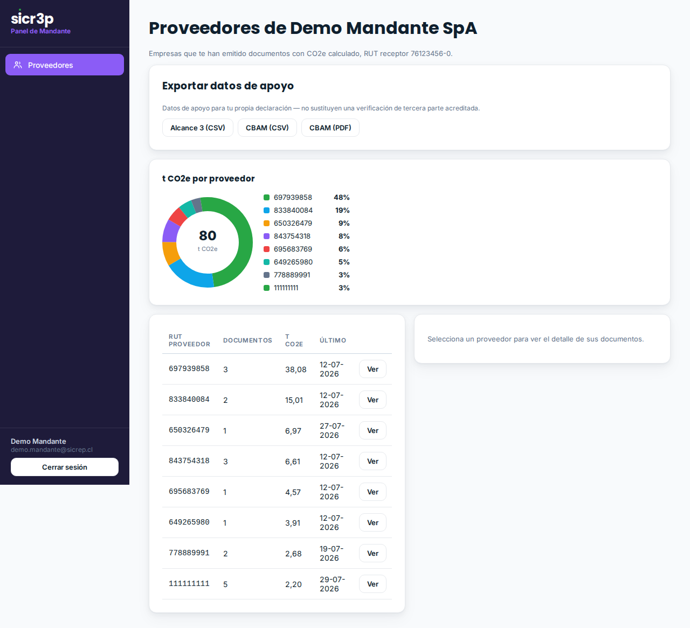

Las emisiones de tu cadena de valor, armadas desde las facturas reales de tus proveedores — no desde promedios de industria — en las 15 categorías del GHG Protocol, con la fuente de cada factor citada y export listo para tu reporte NCG 461 / IFRS S2.
El Alcance 3 son las emisiones que tu empresa no genera directamente pero que ocurren gracias a su actividad: lo que compras, lo que transportan terceros, lo que tus proveedores queman. Es el alcance que más pesa en la mayoría de las empresas y el que los marcos modernos — NCG 461 de la CMF, IFRS S2 del ISSB, CDP — exigen con más fuerza.
La práctica habitual es enviar planillas a los proveedores y recibir estimaciones sin respaldo. El resultado: cifras que nadie puede defender ante un tercero.
Cuando tus proveedores procesan sus documentos en sicr3p, cada factura emitida a tu RUT queda asociada a ti, calculada con un factor de emisión citado y sellada en una cadena de integridad verificable. Tu Alcance 3 se arma desde evidencia documental de origen, proveedor por proveedor, categoría por categoría.

El panel del mandante: proporción de CO2e por proveedor y exports a un clic (datos de demostración).
El export clasifica cada tonelada en la categoría oficial (WRI/WBCSD):
| # | Categoría | # | Categoría |
|---|---|---|---|
| 1 | Bienes y servicios adquiridos | 9 | Transporte y distribución aguas abajo |
| 2 | Bienes de capital | 10 | Procesamiento de productos vendidos |
| 3 | Combustibles y energía (no A1/A2) | 11 | Uso de productos vendidos |
| 4 | Transporte y distribución aguas arriba | 12 | Fin de vida de productos vendidos |
| 5 | Residuos de las operaciones | 13 | Activos arrendados aguas abajo |
| 6 | Viajes de negocios | 14 | Franquicias |
| 7 | Desplazamiento de empleados | 15 | Inversiones |
| 8 | Activos arrendados aguas arriba |
Endpoint GET /api/mandante/export/alcance3?anio=&formato=csv (autenticado con la API key de tu empresa o tu sesión de panel). Columnas:
| rut_proveedor | cat. | categoría GHG | descripción | docs | t CO2e | fuente del factor |
|---|---|---|---|---|---|---|
| 78.345.120-4 | 3 | Combustibles y energía | Energía eléctrica | 1 | 3,8412 | MMA Chile — HuellaChile (2023) |
| 79.218.440-5 | 3 | Combustibles y energía | Combustibles | 1 | 3,2160 | IPCC — Guías 2006 (v2) |
Filas del export de muestra con datos ficticios.
El mismo panel entrega el export CBAM (para tus lotes de exportación a la UE) y la carpeta de evidencia imprimible de cada trámite de un proveedor, con su hoja de comprobación por QR.
| Es | No es |
|---|---|
| Datos de apoyo trazables hasta el documento de origen, con factor y fuente por fila. | Una verificación de tercera parte acreditada — si tu marco la exige, el expediente de sicr3p queda listo para entregársela al verificador. |
| Cobertura de los proveedores que procesan en sicr3p. | Cobertura mágica del 100% de tu cadena desde el día uno: crece proveedor a proveedor. |
sicr3p SpA · Antofagasta, Chile
contacto@sicrep.cl · www.sicr3p.cl
sicr3p — Carpeta de servicio: Alcance 3 · Versión 1.0 · Agosto 2026 · Material informativo comercial. sicr3p no es certificador, auditor ni autoridad: registra, estructura y sella declaraciones verificables.